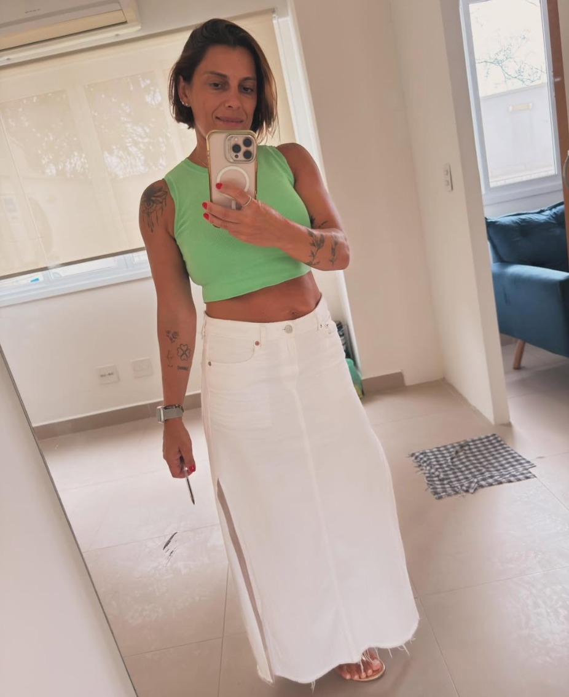

Pós-operatório
Fisioterapia voltada ao acompanhamento da recuperação após procedimentos cirúrgicos, respeitando cada etapa do processo.
Entender o processoFisioterapia especializada no cuidado da mulher em momentos de transformação: pós-operatório, tratamentos oncológicos e pós-parto.

Fisioterapia no cuidado da mulher em momentos de transformação: pós-operatório de cirurgias plásticas, reconstrução mamária e tratamentos oncológicos, além do período pós-parto.
Cada fase exige atenção, conhecimento e um cuidado individualizado. O acompanhamento fisioterapêutico é conduzido respeitando as necessidades e os limites de cada pessoa durante o processo de recuperação.
Três momentos diferentes da vida da mulher, cada um com necessidades próprias de acompanhamento.
Fisioterapia voltada ao acompanhamento da recuperação após procedimentos cirúrgicos, respeitando cada etapa do processo.
Entender o processoAtendimento voltado às necessidades funcionais e ao cuidado da mulher durante e após tratamentos oncológicos.
Conversar pelo WhatsAppUm olhar individualizado para as mudanças do corpo e as necessidades funcionais do período pós-parto.
Conversar pelo WhatsAppO pós-operatório exige paciência. O corpo passa por um processo intenso de adaptação, cicatrização e reorganização dos tecidos.
Nos primeiros dias, inchaço, hematomas, sensibilidade e limitação de movimentos podem fazer parte desse processo. Cada organismo possui seu próprio ritmo.
Por isso, o acompanhamento adequado e o respeito às orientações profissionais são importantes durante a recuperação.
Representação ilustrativa. Cada organismo possui seu próprio ritmo.
Durante a recuperação, podem surgir dúvidas, inseguranças e mudanças que fazem parte do processo. O acompanhamento fisioterapêutico ajuda a conduzir cada etapa com atenção às necessidades do seu corpo.
Informações claras sobre cada fase da recuperação e espaço para tirar suas dúvidas.
Presença próxima ao longo do processo, observando a evolução de cada etapa.
Atenção às necessidades e aos limites do seu corpo em cada atendimento.
Entre em contato pelo WhatsApp e encontre o melhor horário.
Entendimento individual das suas necessidades e do momento da recuperação.
Definição da condução fisioterapêutica de acordo com cada caso.
Evolução acompanhada de forma individualizada ao longo do processo.
Toque em uma imagem para ampliar.
Um trabalho que une conhecimento técnico e olhar humano para acompanhar diferentes momentos da jornada de recuperação.
Não encontrou o que procurava? Envie sua dúvida pelo WhatsApp.
O momento adequado varia de acordo com o procedimento realizado e as orientações da equipe responsável. A avaliação individual é importante para definir a condução adequada.
A abordagem pode ser utilizada em diferentes procedimentos, conforme avaliação e indicação profissional. Entre os contextos atendidos estão cirurgias plásticas e reconstruções.
A primeira consulta é destinada a compreender o momento da recuperação, identificar necessidades e definir a melhor condução fisioterapêutica para o caso.
Sim. O atendimento contempla o período pós-parto, com abordagem individualizada de acordo com as necessidades de cada mulher.
Sim. O endereço informado para atendimento é Rua José Bonifacio, 598 - Centro, São Bernardo do Campo - SP.
Converse com a Dra. Thelma e saiba como funciona o acompanhamento fisioterapêutico.